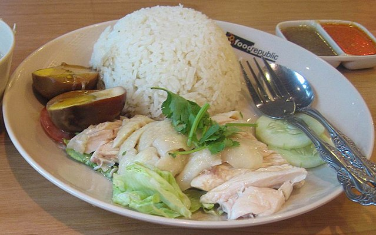
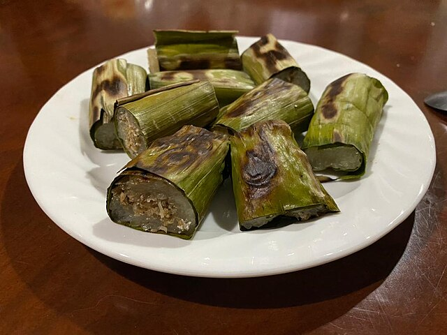
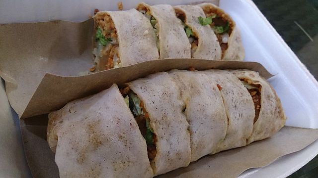
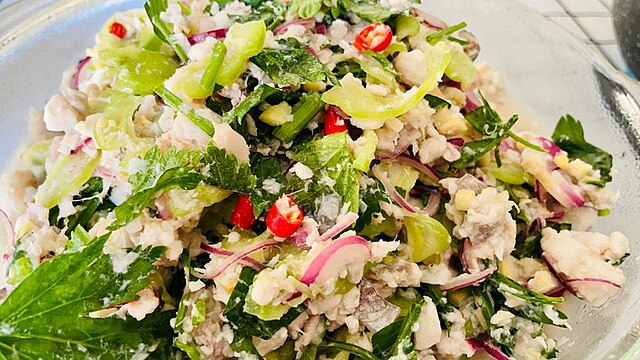

Customer Reviews - Local Food
Hokkien Mee

“Hokkien Mee Penang” by brown_colour, licensed under CC BY 2.0. View image . Changes made: Resized and Cropped
{kind=link}
Ikan Bakar

“Ikan Bakar” by S Kartika, licensed under CC BY-SA 4.0 . View image. Changes made: Resized and Cropped
{kind=link}
“Freshly grilled fish with spicy sambal that enhances every bite.”
★★★★☆
Dodol

“Dodol” by Midori, licensed under CC BY 3.0 . View image. Changes made: Resized and Cropped
{kind=link}
“Chewy, sweet, and fragrant - a nostalgic traditional treat.”
★★★☆☆
Hainanese Chicken Rice
“Hainanese Chicken Rice” by Terence, licensed under CC BY 2.5. View Image. Changes made: Resized and Cropped
{kind=link}
“Tender chicken and aromatic rice with the perfect chili sauce.”
★★★★★
Nasi Kerabu

“Nasi Kerabu” by Brownc, licensed under CC BY-SA 4.0 . View image. Changes made: Resized and Cropped
{kind=link}
“Colorful, herbal, and full of flavors - a Kelantanese classic.”
★★★★☆
Pulut Panggang
“Pulut Panggang” by Mdsheth1986, licensed under CC BY 4.0. View image. Changes made: Resized and Cropped
{kind=link}
“Smoky grilled glutinous rice with spicy coconut filling - addictive!”
★★★☆☆
Nasi Kebuli

“Nasi Kebuli” by Gunawan Kartapranata, licensed under CC BY-SA 3.0 . View image. Changes made: Resized and Cropped
{kind=link}
“Aromatic rice dish with rich spices and tender meat, very satisfying.”
★★★★☆
Nasi Ambeng

“Nasi Ambeng” by Misaochan2, licensed under CC BY 4.0 . View image. Changes made: Resized and Cropped
{kind=link}
“Perfect for sharing, generous portions with bold traditional flavors.”
★★★★★
Kuih Apam Johol

“Apam Johol” by DEKDA SAMSUDIN, licensed under CC BY-SA 4.0. View Image. Changes made: Resized and Cropped
{kind=link}
“Soft, slightly sweet, and wrapped in banana leaves - simple yet delightful.”
★★★☆☆
Popiah Basah
“Popiah Basah” by ProjectManhattan, licensed under CC BY-SA 3.0 . View image. Changes made: Resized and Cropped
{kind=link}
“Fresh spring rolls filled with crunchy vegetables and savory sauce.”
★★★★☆
Mee Bandung Muar

“Mee Bandung Muar” by Sham Hardy, licensed under CC BY 2.0. View image. Changes made: Resized and Cropped
{kind=link}
“Thick gravy with a rich seafood taste, truly comforting.”
★★★★☆
Kuih Penjaram

“Kuih Penjaram” by Ranking Update, licensed under CC BY-SA 3.0 Unported . View image. Changes made: Resized and Cropped
.jpg){kind=link}
“Crispy edges with a soft and fluffy center - a Sarawak specialty.”
★★★☆☆
Hinava
“Hinava” by Terencetulus, licensed under CC BY-SA 4.0 . View image. Changes made: Resized and Cropped
{kind=link}
“Refreshing and tangy, with raw fish cured in lime and chili.”
★★★★☆
Kolo Mee

“Kolo Mee” by Meandkancil2020, licensed under CC BY 4.0. View Image. Changes made: Resized and Cropped
{kind=link}
“Springy noodles tossed with light sauce, simple yet delicious.”
★★★★★
Kompia

“Kompia” by AasonTing, licensed under CC BY-SA 4.0 . View image. Changes made: Resized and Cropped
{kind=link}
“Crispy on the outside, soft inside - perfect when filled with meat.”
★★★☆☆
Customer Reviews - Global Food
Martabak

"Martabak" by Mojackjutaily, licensed under CC BY-SA 4.0. View Image. Changes made: Resized and Cropped
“Rich, fluffy pancake filled with chocolate and nuts, a true indulgence.”
★★★★☆
Pad Thai

"Pad Thai" by Takeaway, licensed under CC BY-SA 3.0 . Image page. Changes made: Resized and Cropped
{kind=link}
“Sweet, tangy, and a little nutty—perfectly balanced noodles.”
★★★★★
Takoyaki

"Takoyaki" by Francesc Fort, licensed under CC BY-SA 4.0. Image page. Changes made: Resized and Cropped
{kind=link}
“Soft, savory balls with octopus, drizzled with sauce and bonito flakes—so good!”
★★★★☆
Pizza

"Pizza" by Dale Cruse, licensed under CC BY 2.0 . Image page. Changes made: Resized and Cropped
.jpg){kind=link}
“Cheesy, crispy, and loaded with toppings—everyone's favorite classic.”
★★★★★
Belgian Waffle

"Belgian Waffle" by Ralph Daily, licensed under CC BY 2.0. Image page. Changes made: Resized and Cropped
{kind=link}
“Light, fluffy, and perfectly golden with just the right crunch.”
★★★★★
Fish and Chips

"Fish and Chips" by Andrew Dunn, licensed under CC BY-SA 2.0 . Image page. Changes made: Resized and Cropped
{kind=link}
“Golden fried fish with fluffy fries, classic comfort done right.”
★★★★★
Gyros

"Gyros" by Antonio Fajardo i López, licensed under CC BY-SA 3.0 . Image page. Changes made: Resized and Cropped
{kind=link}
“Juicy meat with tangy tzatziki wrapped in soft pita—delicious!”
★★★★☆
Hot Dog

"Hot Dog" by stevendepolo, licensed under CC BY 2.0 . Image page. Changes made: Resized and Cropped
{kind=link}
“Simple yet tasty, loaded with sauces and toppings that hit the spot.”
★★★☆☆
Taco

"Taco" by Ari Helminen, licensed under CC BY 2.0 Unported . Image page. Changes made: Resized and Cropped
{kind=link}
“Crispy shell, fresh toppings, and bold seasoning—every bite is exciting.”
★★★★★
Arepa

Arepa by Wilmeris Hernández, licensed under CC BY-SA 3.0. View Image. Changes made: Resized and Cropped
{kind=link}
“Crispy outside yet fluffy inside, and the fillings are so satisfying!”
★★★★☆
Coxinha
“Coxinha” by Romerito Pontes, licensed under CC BY 2.0. View Image. Changes made: Resized and Cropped
_La_Donosti_-_Agudos_-_Coxinha_de_Leitoa_Romerito_Pontes_(15870107515).jpg){kind=link}
“Crunchy coating with creamy chicken filling—addictive little snacks!”
★★★★☆
Falafel

“Falafel” by Popo le Chien, licensed under CC BY-SA 3.0. Image page. Changes made: Resized and Cropped
{kind=link}
“Crispy on the outside, soft and herby inside, packed with flavor.”
★★★★☆
Suya

"Suya" by WhisperToMe, licensed under CC ZERO 1.0. Image page. Changes made: Resized and Cropped
{kind=link}
“Spicy, smoky skewers packed with flavor and heat—amazing street food.”
★★★★☆
Lamington
“Lamington" by jules, licensed under CC BY 2.0 Image page. Changes made: Resized and Cropped
{kind=link}
“Moist sponge with chocolate and coconut—sweet but not overwhelming.”
★★★★☆
Meat Pie
“Meat Pie” by Georgian Recipes, licensed under CC BY 3.0 Image page. Changes made: Resized and Cropped
{kind=link}
“Flaky crust with savory filling—warm and comforting.”
★★★★☆
“Rich, dark soy sauce flavor with the perfect balance of prawns and pork.”
★★★★★